Silent when you wish, vivid when you ask.
- 0–100 km/h
- 2.9 s
- Power
- 590 hp
- Torque
- 900 Nm
Coach-built elegance screaming pure Italian.
Beauty is the purpose. Engineering is the method.
Totem Automobili is an entirely Italian house. Every motor car is conceived for one person and shaped by hand until form and function become indistinguishable.
Its point of departure is the Italian grand tourer of the 1960s, the purest expression of an era when beauty led the way. Modern technology has given that icon a second life: the proportions endure, while everything beneath them moves forward. Each commission begins as a conversation and ends as a signature.
2018
Founded in the Venice area
One of one
Every car built to order for a single owner
100%
Carbon-fibre bodywork on every GT
02The studio
Turn the car and change its colour. These are 14 paints from a palette of more than forty; beyond it, the Individual Program matches any colour you bring, from a memory to a sample.
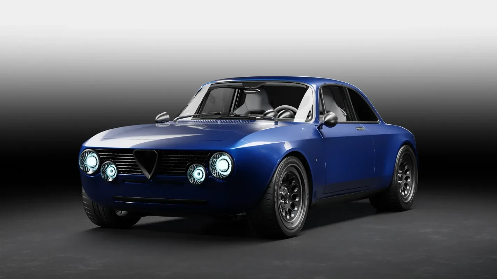
PaintBlu Francia
Studio rendering of the GT Super. Colours on screen are indicative.
03Authentic signature
At the heart of every Totem GT lies a carbon-fibre monocoque, developed by Totem and its specialist partners and joined to high-resistance aluminium subframes. The silhouette that made an icon is kept; everything beneath it is redesigned from the ground up.

75kg
Carbon-fibre monocoque shell
US–EU
Safety requirements, validated by FEA
100%
Carbon-fibre body panels
04The iconic soul
A twin-turbocharged V6 sits behind the front axle; a six-speed, open-gated manual gearbox sends its power to the rear wheels alone. Every input remains mechanical, immediate and direct. Or, in the GT Electric, torque arrives in an instant and in silence.
Elegant at rest, ferocious when asked.
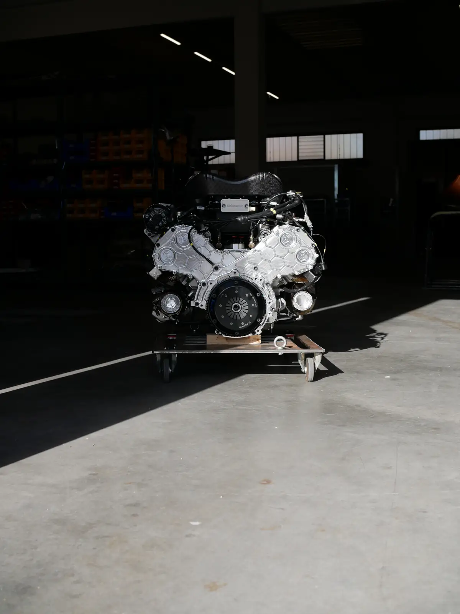


GT Electric
Silent quick.
05A new project
Italian coachbuilding, reimagined.
Beyond the GT Series, a clean sheet. Tiziano is the first platform conceived entirely by Totem: a carbon-fibre central monocoque, aluminium subframes and a naturally aspirated V12 set behind the driver, with a six-speed manual transaxle. On it, the T12 Series will be a family of coachbuilt automobiles, each a one-off within a series.

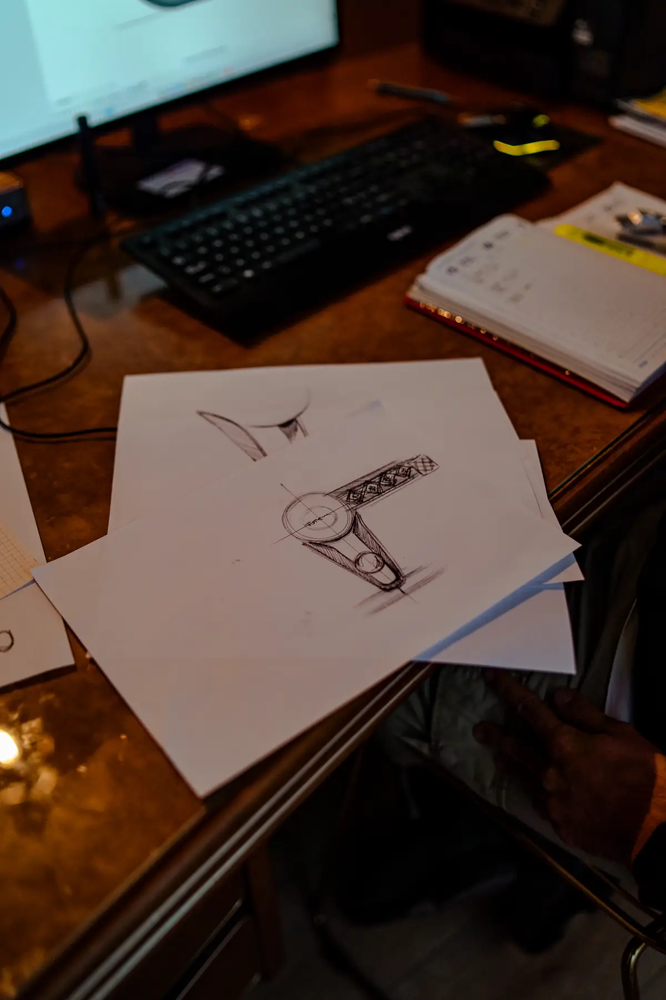

06Totem Individual Program
A Totem should be as unique as the person who drives it. The programme begins where the catalogue ends: each request is studied, engineered and crafted in our atelier, approved on physical samples and recorded on the car itself.
07Commissions
08Compare
Three interpretations of the Italian Gran Turismo on one carbon-fibre architecture. Every figure is indicative: each car is configured, and tuned, for its owner.
 |  |  | |
|---|---|---|---|
| Powertrain | Electric, rear-wheel drive | 2.8 l twin-turbo V6 | 3.2 l twin-turbo V6 |
| Power | 590 hp | 640 hp | 740 hp |
| Torque | 900 Nm | 655 Nm | 690 Nm |
| 0–100 km/h | 2.9 s | 3.2 s | 2.8 s |
| Top speed | 210 km/h, limited | 240 km/h, limited | 250 km/h, limited |
| Gearbox | Automatic, LSD | 6-speed manual | 6-speed manual |
| Weight | 1,490 kg | 1,180 kg dry | 1,200 kg dry |
| Structure | Carbon-fibre monocoque | Carbon-fibre monocoque | Carbon-fibre monocoque |
09Recognition
Concorso d’Eleganza Villa d’Este, for the bespoke GT Electric “Armonia”.
The GT Electric, Guest Car.
Runner-up at Villa d’Este for the “Rocket” Sport Prototipo.
Concurso de Elegancia Costa del Sol.
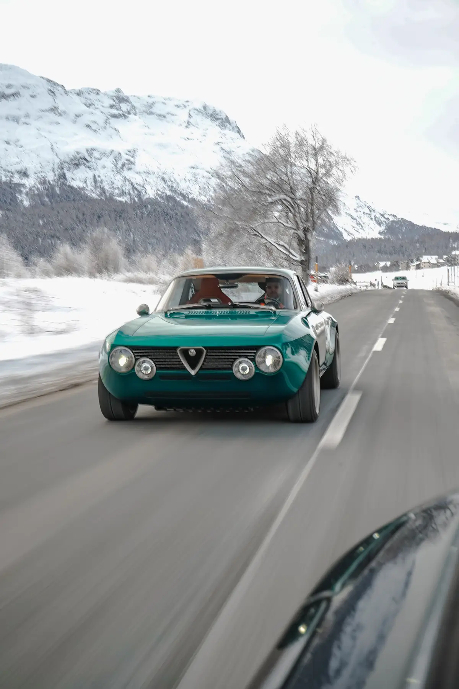
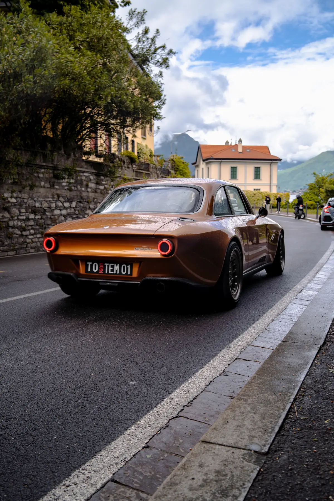
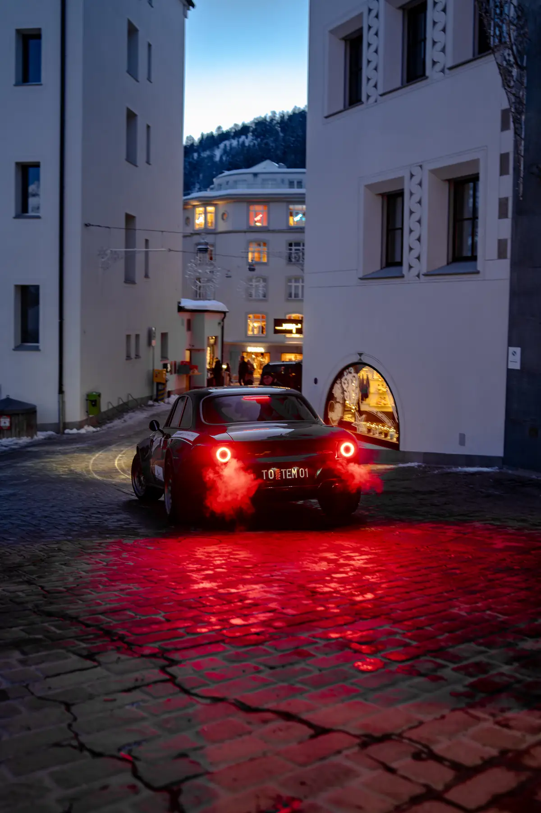
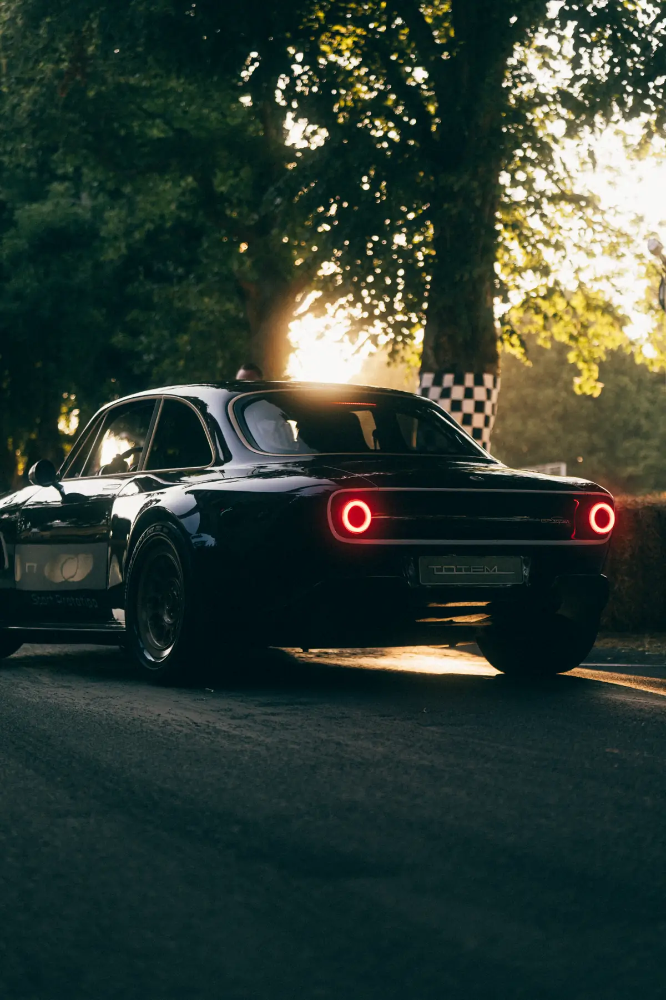
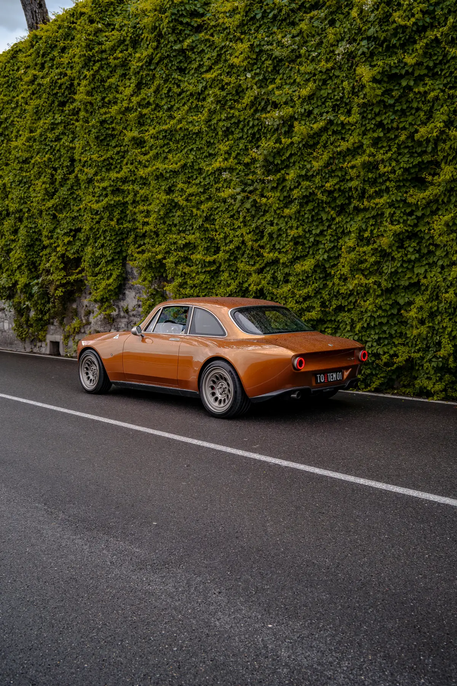
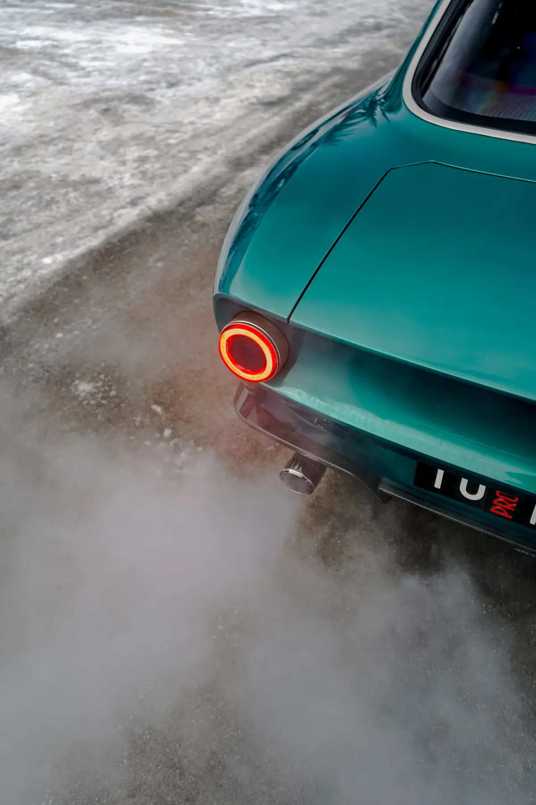
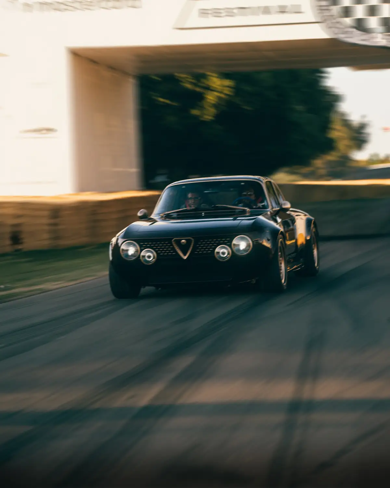
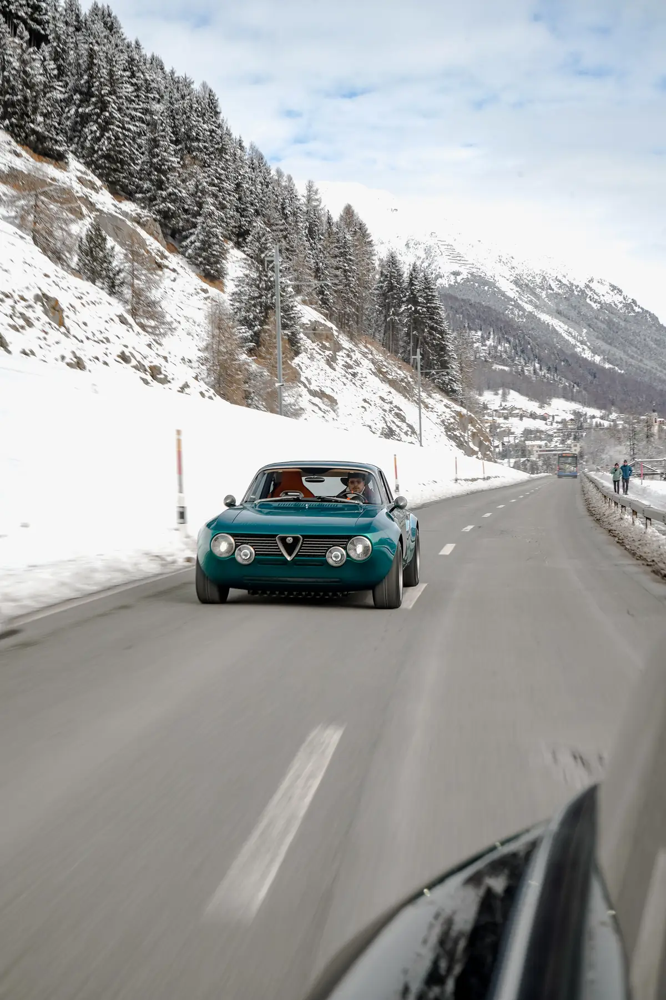
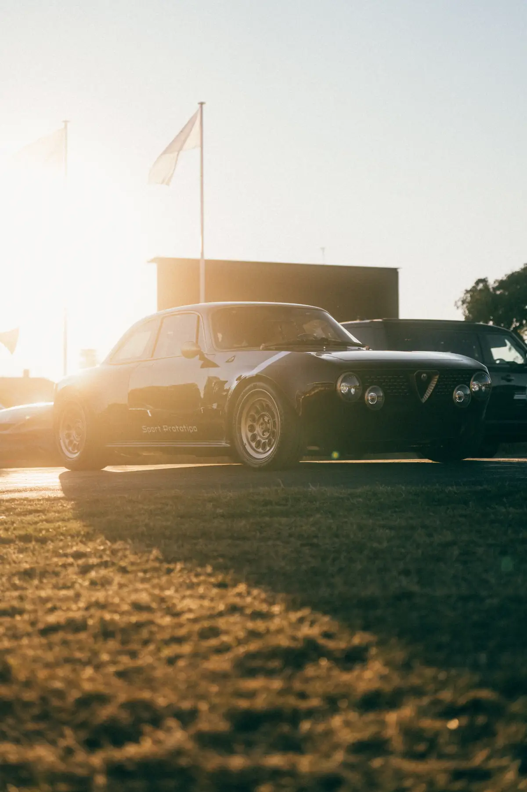
10Brochures
The 2026 brochures, to read on screen or download. The Options & Totem Individual catalogue is available on request.


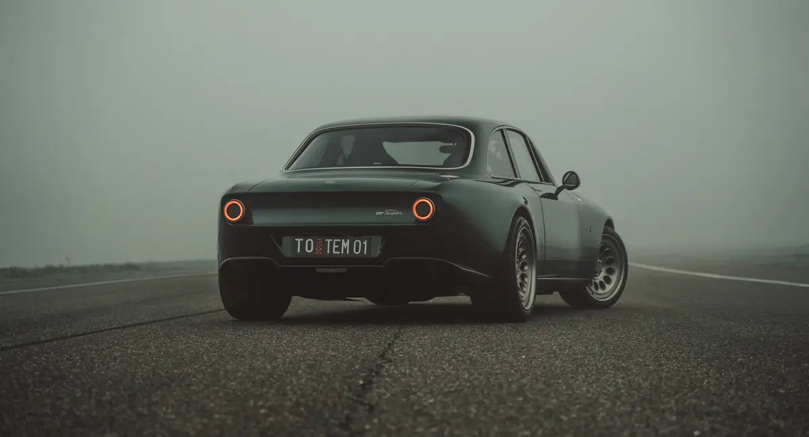